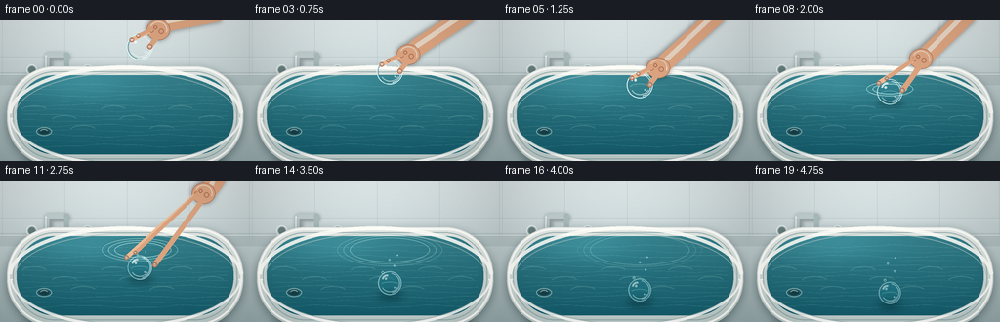
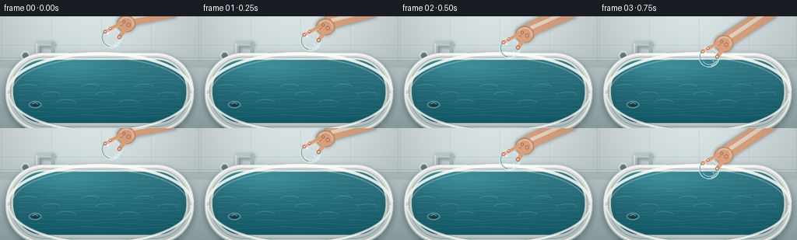
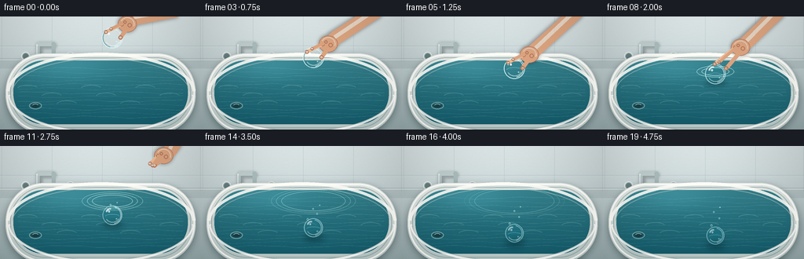
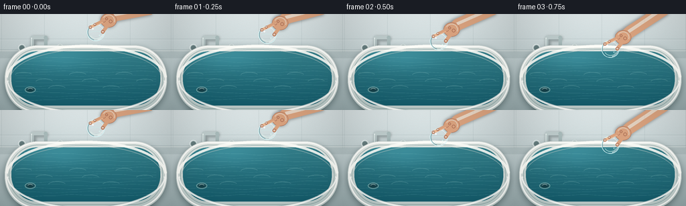
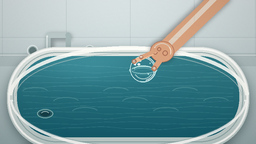
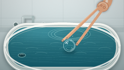
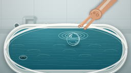
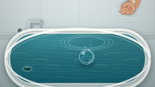

CODING AGENTS AS PIXEL WORLD MODELS
traex/GPT-5.6-Sol · phygen_010
点击播放 · 原生 RGB 像素
逐轮保存的候选
回放视频、检查图与代码变化。
每份候选均可单独播放。实际图片检查记录在下方工具轨迹中。
候选 01播放与检查图
点击播放 · 原生 RGB 像素


展开代码变化
--- 上一保存版本
+++ 本次保存版本
@@ -0,0 +1,309 @@
+from pathlib import Path
+import math
+import numpy as np
+from PIL import Image, ImageDraw, ImageFilter
+import artifact_io
+
+# Deterministic procedural video. Everything is rendered at 3x and downsampled.
+W, H, N = 256, 144, 20
+S = 3
+WW, HH = W*S, H*S
+rng = np.random.default_rng(10)
+
+
+def sc(v):
+ if isinstance(v, (tuple, list)):
+ return tuple(int(round(x*S)) for x in v)
+ return int(round(v*S))
+
+
+def smoothstep(x):
+ x = max(0.0, min(1.0, x))
+ return x*x*(3-2*x)
+
+
+def mask_shape(kind, box, radius=0):
+ m = Image.new('L', (WW, HH), 0)
+ d = ImageDraw.Draw(m)
+ if kind == 'ellipse': d.ellipse(sc(box), fill=255)
+ elif kind == 'rounded': d.rounded_rectangle(sc(box), radius=sc(radius), fill=255)
+ return m
+
+
+def composite_color(im, color, mask):
+ layer = Image.new('RGB', im.size, color)
+ im.paste(layer, (0,0), mask)
+
+
+def gradient_layer(top, bottom):
+ y = np.linspace(0,1,HH)[:,None,None]
+ a = np.array(top, dtype=float)[None,None,:]*(1-y) + np.array(bottom, dtype=float)[None,None,:]*y
+ return Image.fromarray(np.uint8(np.clip(np.repeat(a,WW,axis=1),0,255)), 'RGB')
+
+
+def draw_capsule(d, p1, p2, width, fill, outline=None):
+ p1s, p2s, ws = sc(p1), sc(p2), sc(width)
+ d.line([p1s,p2s], fill=fill, width=ws)
+ r=ws//2
+ for p in (p1s,p2s):
+ d.ellipse((p[0]-r,p[1]-r,p[0]+r,p[1]+r), fill=fill, outline=outline, width=max(1,S))
+
+
+def base_scene(frame_index):
+ # Bathroom wall with a soft, photographic cool-to-warm gradient and fine grain.
+ yy = np.linspace(0,1,HH)[:,None,None]
+ top=np.array([210,219,220.],float); bot=np.array([151,170,172.],float)
+ arr=top*(1-yy)+bot*yy
+ arr=np.repeat(arr,WW,axis=1)
+ # diffuse light from upper-left
+ X,Y=np.meshgrid(np.arange(WW),np.arange(HH))
+ glow=np.exp(-(((X-120*S)/(125*S))**2+((Y-5*S)/(90*S))**2))*18
+ arr += glow[:,:,None]
+ noise=rng.normal(0,1.25,(HH,WW,1))
+ arr += noise
+ im=Image.fromarray(np.uint8(np.clip(arr,0,255)),'RGB')
+ d=ImageDraw.Draw(im,'RGBA')
+ # large matte ceramic wall tiles
+ for x in (2,66,130,194,255): d.line((sc(x),0,sc(x),sc(57)), fill=(118,139,141,45), width=sc(.65))
+ d.line((0,sc(37),WW,sc(37)), fill=(111,132,134,42), width=sc(.7))
+ d.line((0,sc(39),WW,sc(39)), fill=(245,249,246,30), width=sc(.5))
+ # subtle shelf / junction behind the bath
+ d.rectangle((0,sc(53),WW,sc(66)), fill=(98,119,120,38))
+ d.line((0,sc(55),WW,sc(55)), fill=(246,250,247,120), width=sc(1))
+
+ # faucet and controls, behind the tub
+ shadow=Image.new('RGBA',(WW,HH),(0,0,0,0)); sd=ImageDraw.Draw(shadow,'RGBA')
+ draw_capsule(sd,(50,55),(50,37),7,(51,66,68,100))
+ draw_capsule(sd,(50,37),(68,37),7,(51,66,68,100))
+ shadow=shadow.filter(ImageFilter.GaussianBlur(sc(2))); im=Image.alpha_composite(im.convert('RGBA'),shadow).convert('RGB')
+ d=ImageDraw.Draw(im,'RGBA')
+ draw_capsule(d,(48,55),(48,35),5.5,(181,196,196,255))
+ draw_capsule(d,(48,35),(68,35),5.5,(191,205,205,255))
+ draw_capsule(d,(68,35),(68,49),5.5,(170,188,188,255))
+ draw_capsule(d,(47,54),(47,36),1.25,(246,253,251,170))
+ d.ellipse(sc((27,45,38,56)), fill=(170,187,187,255), outline=(242,249,247,220), width=sc(1))
+ d.ellipse(sc((29,47,36,54)), fill=(96,119,121,230))
+ d.ellipse(sc((84,45,95,56)), fill=(170,187,187,255), outline=(242,249,247,220), width=sc(1))
+ d.ellipse(sc((86,47,93,54)), fill=(96,119,121,230))
+
+ # soft cast shadow beneath the bathtub
+ sh=mask_shape('rounded',(7,51,249,151),49).filter(ImageFilter.GaussianBlur(sc(5)))
+ sh_rgba=Image.new('RGBA',(WW,HH),(28,48,50,0)); sh_rgba.putalpha(sh.point(lambda p:int(p*.52)))
+ im=Image.alpha_composite(im.convert('RGBA'),sh_rgba).convert('RGB')
+
+ # enamel outer tub
+ outer=mask_shape('rounded',(7,47,249,149),49)
+ tubgrad=gradient_layer((249,249,244),(188,203,201))
+ im.paste(tubgrad,(0,0),outer)
+ d=ImageDraw.Draw(im,'RGBA')
+ d.rounded_rectangle(sc((8,48,248,147)), radius=sc(48), outline=(255,255,252,230), width=sc(2))
+
+ # deep water cavity
+ inner=mask_shape('rounded',(17,56,239,137),39)
+ wy=np.linspace(0,1,HH)[:,None,None]
+ water_top=np.array([74,150,158.]); water_bottom=np.array([18,89,105.])
+ wa=water_top*(1-wy)+water_bottom*wy
+ wa=np.repeat(wa,WW,axis=1)
+ # broad sky/window reflection
+ XX,YY=np.meshgrid(np.arange(WW)/S,np.arange(HH)/S)
+ refl=18*np.exp(-(((XX-87)/58)**2+((YY-65)/20)**2))
+ wa += refl[:,:,None]*np.array([.65,1.,1.12])
+ water=Image.fromarray(np.uint8(np.clip(wa,0,255)),'RGB')
+ im.paste(water,(0,0),inner)
+
+ # water caustics and calm surface streaks, clipped to interior
+ surf=Image.new('RGBA',(WW,HH),(0,0,0,0)); sd=ImageDraw.Draw(surf,'RGBA')
+ phase=frame_index*.15
+ for k in range(13):
+ y=66+k*5.15
+ pts=[]
+ for x in range(23,236,3):
+ yy2=y+1.2*math.sin(x*.055+k*1.45+phase)+.35*math.sin(x*.16-k)
+ pts.append(sc((x,yy2)))
+ sd.line(pts, fill=(172,236,229,26 if k%2 else 38), width=sc(.65))
+ # bright diagonal caustic fragments
+ for k in range(8):
+ x=35+k*25+(k%2)*6
+ y=91+(k%3)*10
+ sd.arc(sc((x-13,y-4,x+13,y+5)),190,342,fill=(206,251,239,42),width=sc(1))
+ surf.putalpha(Image.composite(surf.getchannel('A'),Image.new('L',(WW,HH),0),inner))
+ im=Image.alpha_composite(im.convert('RGBA'),surf).convert('RGB')
+
+ # enamel rim: thin specular inner line and front highlight
+ d=ImageDraw.Draw(im,'RGBA')
+ d.rounded_rectangle(sc((13,52,243,142)),radius=sc(44),outline=(112,144,145,150),width=sc(1))
+ d.arc(sc((10,47,247,149)),2,178,fill=(255,255,252,220),width=sc(3))
+ d.arc(sc((12,50,245,146)),4,176,fill=(146,169,169,130),width=sc(1))
+ d.arc(sc((8,46,249,149)),183,357,fill=(255,255,250,225),width=sc(4))
+ d.arc(sc((15,53,242,142)),182,357,fill=(175,195,193,160),width=sc(1))
+ # tiny overflow/drain fitting under water
+ d.ellipse(sc((37,109,53,118)), fill=(37,86,94,190), outline=(157,205,204,180), width=sc(1))
+ d.ellipse(sc((40,111,50,116)), fill=(18,59,68,220))
+ d.arc(sc((41,111,49,116)),190,342,fill=(219,244,239,150),width=sc(1))
+ return im, inner
+
+
+def sphere_position(i):
+ # Hand lowering (0-5), contact pause (6-7), then dense glass sinks to basin floor.
+ if i <= 5:
+ q=smoothstep(i/5)
+ return 143, 27 + 39*q, 13.2, False
+ ys=[69,70,73,77,82,88,94,99,104,108,111,113,114,114]
+ y=ys[min(i-6,len(ys)-1)]
+ r=13.1-(max(0,i-7))*0.16
+ return 143, y, r, i>=8
+
+
+def draw_underwater_shadow(im,i,cx,cy,r,inner):
+ if i < 8: return im
+ # soft optical shadow deeper and slightly behind the sinking ball
+ depth=min(1,(cy-71)/43)
+ m=Image.new('L',(WW,HH),0); md=ImageDraw.Draw(m)
+ md.ellipse(sc((cx-r*1.05,cy+r*.7,cx+r*1.15,cy+r*1.2+depth*3)),fill=int(90+60*depth))
+ m=m.filter(ImageFilter.GaussianBlur(sc(2.5+depth*2)))
+ m=Image.composite(m,Image.new('L',(WW,HH),0),inner)
+ layer=Image.new('RGBA',(WW,HH),(2,38,47,0)); layer.putalpha(m)
+ return Image.alpha_composite(im.convert('RGBA'),layer).convert('RGB')
+
+
+def draw_glass_ball(im, cx, cy, r, submerged, depth=0):
+ # Refract/magnify the existing scene inside the sphere, then add Fresnel rim and highlights.
+ x0,y0,x1,y1=[int(round(v*S)) for v in (cx-r,cy-r,cx+r,cy+r)]
+ diam=max(2,x1-x0)
+ crop=im.crop((max(0,x0-2*S),max(0,y0-2*S),min(WW,x1+2*S),min(HH,y1+2*S)))
+ crop=crop.resize((diam,diam),Image.Resampling.BICUBIC)
+ # slight vertical refraction shift
+ if submerged:
+ tint=Image.new('RGB',crop.size,(34,142,157))
+ crop=Image.blend(crop,tint,.12+.07*depth)
+ mask=Image.new('L',(diam,diam),0)
+ ma=np.zeros((diam,diam),dtype=np.uint8)
+ yy,xx=np.mgrid[0:diam,0:diam]
+ rr=np.sqrt(((xx-(diam-1)/2)/(.5*diam))**2+((yy-(diam-1)/2)/(.5*diam))**2)
+ ma[rr<=1]=210 if not submerged else 170
+ mask=Image.fromarray(ma,'L').filter(ImageFilter.GaussianBlur(max(1,S//2)))
+ im.paste(crop,(x0,y0),mask)
+
+ ov=Image.new('RGBA',(WW,HH),(0,0,0,0)); d=ImageDraw.Draw(ov,'RGBA')
+ # multiple transparent Fresnel rings establish clear glass rather than an opaque marble
+ alpha=int(225-75*depth) if submerged else 240
+ d.ellipse(sc((cx-r,cy-r,cx+r,cy+r)), outline=(221,252,252,alpha), width=sc(1.15))
+ d.arc(sc((cx-r+.9,cy-r+.9,cx+r-.9,cy+r-.9)),104,255,fill=(53,115,127,150),width=sc(1.15))
+ d.arc(sc((cx-r+1.6,cy-r+1.6,cx+r-1.6,cy+r-1.6)),280,76,fill=(255,255,255,190-int(55*depth)),width=sc(.9))
+ # lens-like caustic at lower edge
+ d.arc(sc((cx-r*.71,cy-r*.56,cx+r*.72,cy+r*.76)),24,151,fill=(233,255,247,150),width=sc(1))
+ # clean specular reflection: crescent plus pin light
+ d.arc(sc((cx-r*.68,cy-r*.72,cx+r*.18,cy+r*.13)),184,287,fill=(255,255,255,235-int(depth*70)),width=sc(2))
+ d.ellipse(sc((cx-r*.43,cy-r*.47,cx-r*.24,cy-r*.27)),fill=(255,255,255,220-int(depth*70)))
+ d.ellipse(sc((cx+r*.34,cy+r*.31,cx+r*.47,cy+r*.44)),fill=(223,255,252,150))
+ # subtle internal inverted water line/reflection
+ d.arc(sc((cx-r*.72,cy-r*.10,cx+r*.72,cy+r*.34)),184,355,fill=(199,248,243,95),width=sc(.75))
+ return Image.alpha_composite(im.convert('RGBA'),ov).convert('RGB')
+
+
+def draw_ripples_and_splash(im,i):
+ if i < 6: return im
+ ov=Image.new('RGBA',(WW,HH),(0,0,0,0)); d=ImageDraw.Draw(ov,'RGBA')
+ age=i-6
+ # gentle concentric elliptical ripples fixed at contact point; each expands and fades
+ for j in range(3):
+ a=age-j*1.3
+ if 0 <= a <= 10:
+ rad=14+a*5.0
+ ry=rad*.31
+ alpha=int(max(0,155-a*14))
+ d.ellipse(sc((143-rad,70-ry,143+rad,70+ry)),outline=(210,255,248,alpha),width=sc(1.1))
+ d.arc(sc((143-rad-1,70-ry-1,143+rad+1,70+ry+1)),185,350,fill=(8,76,91,alpha//2),width=sc(.8))
+ # a tiny crown and droplets only at the instant of gentle contact
+ if age <= 2:
+ fade=1-age/2.4
+ d.arc(sc((132,65-age,154,73+age*.3)),190,350,fill=(222,255,250,int(210*fade)),width=sc(1.3))
+ for dx,dy,sz in [(-9,-5,1.4),(8,-7,1.2),(13,-3,1.0)]:
+ d.ellipse(sc((143+dx-sz/2,70+dy-age*.8-sz,143+dx+sz/2,70+dy-age*.8)),fill=(222,255,251,int(190*fade)))
+ return Image.alpha_composite(im.convert('RGBA'),ov).convert('RGB')
+
+
+def draw_bubbles(im,i,cx,cy):
+ if i < 10: return im
+ ov=Image.new('RGBA',(WW,HH),(0,0,0,0)); d=ImageDraw.Draw(ov,'RGBA')
+ # sparse displaced air bubbles trail upward behind sinking sphere
+ bubbles=[(-6, .28,1.35),(5,.48,.95),(-1,.66,1.0),(7,.79,.7)]
+ for dx,f,rr in bubbles:
+ by=cy-(cy-69)*f-(i%3)*.45
+ bx=cx+dx+math.sin(i*.7+f*5)*1.2
+ if by>67:
+ d.ellipse(sc((bx-rr,by-rr,bx+rr,by+rr)),outline=(211,255,249,145),width=sc(.65))
+ d.ellipse(sc((bx-rr*.35,by-rr*.55,bx,by-rr*.2)),fill=(255,255,255,115))
+ return Image.alpha_composite(im.convert('RGBA'),ov).convert('RGB')
+
+
+def draw_hand(im,i,cx,cy,r):
+ if i > 12: return im
+ # Hand follows the ball while lowering, releases at contact, then retreats upper-right.
+ if i <= 6:
+ hx,hy=cx+19,cy-18
+ release=max(0,i-5)*2.2
+ else:
+ q=smoothstep((i-6)/6)
+ hx,hy=cx+19+q*50,cy-18-q*63
+ release=5+q*10
+ ov=Image.new('RGBA',(WW,HH),(0,0,0,0));
+ # hand shadow for depth
+ sh=Image.new('RGBA',(WW,HH),(0,0,0,0)); sd=ImageDraw.Draw(sh,'RGBA')
+ sd.line([sc((225,-8)),sc((hx+6,hy-6)),sc((hx,hy+4))],fill=(67,46,39,115),width=sc(19),joint='curve')
+ sd.ellipse(sc((hx-12,hy-11,hx+12,hy+11)),fill=(67,46,39,115))
+ sh=sh.filter(ImageFilter.GaussianBlur(sc(2.2)))
+ ov=Image.alpha_composite(ov,sh)
+ d=ImageDraw.Draw(ov,'RGBA')
+ skin=(220,164,128,255); skinlit=(238,187,149,255); skinshade=(177,116,90,255)
+ # forearm and palm
+ d.line([sc((225,-8)),sc((hx+9,hy-7)),sc((hx+2,hy))],fill=skin,width=sc(18),joint='curve')
+ d.line([sc((221,-8)),sc((hx+8,hy-8))],fill=(247,200,163,125),width=sc(5))
+ d.ellipse(sc((hx-12,hy-10,hx+12,hy+11)),fill=skin,outline=skinshade,width=sc(.65))
+ d.arc(sc((hx-9,hy-8,hx+9,hy+9)),208,20,fill=(246,203,167,130),width=sc(1))
+ # thumb cups right side, index and middle fingertips loosely cradle the sphere
+ thumb_end=(cx+r*.78+release*.40,cy-r*.02-release*.18)
+ draw_capsule(d,(hx+3,hy+2),thumb_end,5.2,skin,skinshade)
+ f1end=(cx-r*.62-release*.42,cy-r*.55-release*.25)
+ f2end=(cx-r*.12-release*.22,cy-r*.86-release*.32)
+ draw_capsule(d,(hx-7,hy+1),f1end,4.5,skinlit,skinshade)
+ draw_capsule(d,(hx-3,hy-2),f2end,4.15,skin,skinshade)
+ # fingernail hints
+ for ex,ey,ang in [(thumb_end[0],thumb_end[1],0),(f1end[0],f1end[1],0),(f2end[0],f2end[1],0)]:
+ d.ellipse(sc((ex-1.7,ey-1.4,ex+1.4,ey+.6)),fill=(244,202,177,205),outline=(163,106,87,100),width=max(1,S//2))
+ return Image.alpha_composite(im.convert('RGBA'),ov).convert('RGB')
+
+
+def render(i):
+ im,inner=base_scene(i)
+ cx,cy,r,sub=sphere_position(i)
+ depth=max(0,min(1,(cy-70)/44))
+ im=draw_underwater_shadow(im,i,cx,cy,r,inner)
+ # Ripples belong on surface and, after sinking begins, visually pass over the ball.
+ if i < 8:
+ im=draw_ripples_and_splash(im,i)
+ im=draw_glass_ball(im,cx,cy,r,sub,depth)
+ else:
+ im=draw_glass_ball(im,cx,cy,r,sub,depth)
+ # translucent water veil over submerged glass
+ veil=Image.new('RGBA',(WW,HH),(24,119,137,0)); vm=Image.new('L',(WW,HH),0); vd=ImageDraw.Draw(vm)
+ vd.ellipse(sc((cx-r,cy-r,cx+r,cy+r)),fill=int(28+depth*32))
+ veil.putalpha(vm); im=Image.alpha_composite(im.convert('RGBA'),veil).convert('RGB')
+ im=draw_ripples_and_splash(im,i)
+ im=draw_bubbles(im,i,cx,cy)
+ im=draw_hand(im,i,cx,cy,r)
+ # mild cinematic vignette
+ ar=np.asarray(im,dtype=np.float32)
+ y,x=np.mgrid[0:HH,0:WW]
+ vign=np.clip(1-0.12*((x-WW/2)/(WW*.7))**2-0.09*((y-HH/2)/(HH*.7))**2,.82,1)
+ ar*=vign[:,:,None]
+ out=Image.fromarray(np.uint8(np.clip(ar,0,255))).resize((W,H),Image.Resampling.LANCZOS)
+ return np.asarray(out,dtype=np.uint8)
+
+
+def main():
+ frames=np.stack([render(i) for i in range(N)],axis=0)
+ artifact_io.save(frames,Path(__file__).resolve().parent)
+
+if __name__=='__main__':
+ main()
候选 02播放与检查图
点击播放 · 原生 RGB 像素


展开代码变化
--- 上一保存版本
+++ 本次保存版本
@@ -9,6 +9,7 @@
S = 3
WW, HH = W*S, H*S
rng = np.random.default_rng(10)
+STATIC_NOISE = rng.normal(0, 1.25, (HH, WW, 1))
def sc(v):
@@ -59,8 +60,7 @@
X,Y=np.meshgrid(np.arange(WW),np.arange(HH))
glow=np.exp(-(((X-120*S)/(125*S))**2+((Y-5*S)/(90*S))**2))*18
arr += glow[:,:,None]
- noise=rng.normal(0,1.25,(HH,WW,1))
- arr += noise
+ arr += STATIC_NOISE
im=Image.fromarray(np.uint8(np.clip(arr,0,255)),'RGB')
d=ImageDraw.Draw(im,'RGBA')
# large matte ceramic wall tiles
@@ -243,10 +243,12 @@
if i <= 6:
hx,hy=cx+19,cy-18
release=max(0,i-5)*2.2
+ hand_q = 0.0
else:
q=smoothstep((i-6)/6)
hx,hy=cx+19+q*50,cy-18-q*63
- release=5+q*10
+ release=0
+ hand_q = q
ov=Image.new('RGBA',(WW,HH),(0,0,0,0));
# hand shadow for depth
sh=Image.new('RGBA',(WW,HH),(0,0,0,0)); sd=ImageDraw.Draw(sh,'RGBA')
@@ -262,10 +264,16 @@
d.ellipse(sc((hx-12,hy-10,hx+12,hy+11)),fill=skin,outline=skinshade,width=sc(.65))
d.arc(sc((hx-9,hy-8,hx+9,hy+9)),208,20,fill=(246,203,167,130),width=sc(1))
# thumb cups right side, index and middle fingertips loosely cradle the sphere
- thumb_end=(cx+r*.78+release*.40,cy-r*.02-release*.18)
+ thumb_contact=(cx+r*.78+release*.40,cy-r*.02-release*.18)
+ thumb_rest=(hx-8,hy+8)
+ thumb_end=tuple(thumb_contact[k]*(1-hand_q)+thumb_rest[k]*hand_q for k in (0,1))
draw_capsule(d,(hx+3,hy+2),thumb_end,5.2,skin,skinshade)
- f1end=(cx-r*.62-release*.42,cy-r*.55-release*.25)
- f2end=(cx-r*.12-release*.22,cy-r*.86-release*.32)
+ f1contact=(cx-r*.62-release*.42,cy-r*.55-release*.25)
+ f2contact=(cx-r*.12-release*.22,cy-r*.86-release*.32)
+ f1rest=(hx-13,hy+6)
+ f2rest=(hx-10,hy+9)
+ f1end=tuple(f1contact[k]*(1-hand_q)+f1rest[k]*hand_q for k in (0,1))
+ f2end=tuple(f2contact[k]*(1-hand_q)+f2rest[k]*hand_q for k in (0,1))
draw_capsule(d,(hx-7,hy+1),f1end,4.5,skinlit,skinshade)
draw_capsule(d,(hx-3,hy-2),f2end,4.15,skin,skinshade)
# fingernail hints
可观测工具轨迹
实际执行的命令与返回图片。
命令 1exit 0
/bin/bash -lc "cat prompt.txt && printf '\\n--- GENERATION_RULES.md ---\\n' && cat GENERATION_RULES.md"
命令 2exit 0
/bin/bash -lc "cat task_spec.json && printf '\\n--- FILES ---\\n' && find . -maxdepth 2 -type f -printf '%p\\n' | sort"
命令 3exit 0
/bin/bash -lc "command -v ffmpeg; command -v blender; command -v python3; python3 - <<'PY' mods=['PIL','numpy','cv2','imageio','moviepy','moderngl'] for m in mods: try: x=__import__(m); print(m,'OK',getattr(x,'__version__','')) except Exception as e: print(m,'NO',e) PY"
命令 4exit 0
/bin/bash -lc 'cat artifact_io.py'
命令 5exit 0
/bin/bash -lc 'cat player_template.html | head -80'
命令 6exit 0
/bin/bash -lc "cat > generate.py <<'PY'
from pathlib import Path
import math
import numpy as np
from PIL import Image, ImageDraw, ImageFilter
import artifact_io
# Deterministic procedural video. Everything is rendered at 3x and downsampled.
W, H, N = 256, 144, 20
S = 3
WW, HH = W*S, H*S
rng = np.random.default_rng(10)
def sc(v):
if isinstance(v, (tuple, list)):
return tuple(int(round(x*S)) for x in v)
return int(round(v*S))
def smoothstep(x):
x = max(0.0, min(1.0, x))
return x*x*(3-2*x)
def mask_shape(kind, box, radius=0):
m = Image.new('L', (WW, HH), 0)
d = ImageDraw.Draw(m)
if kind == 'ellipse': d.ellipse(sc(box), fill=255)
elif kind == 'rounded': d.rounded_rectangle(sc(box), radius=sc(radius), fill=255)
return m
def composite_color(im, color, mask):
layer = Image.new('RGB', im.size, color)
im.paste(layer, (0,0), mask)
def gradient_layer(top, bottom):
y = np.linspace(0,1,HH)[:,None,None]
a = np.array(top, dtype=float)[None,None,:]*(1-y) + np.array(bottom, dtype=float)[None,None,:]*y
return Image.fromarray(np.uint8(np.clip(np.repeat(a,WW,axis=1),0,255)), 'RGB')
def draw_capsule(d, p1, p2, width, fill, outline=None):
p1s, p2s, ws = sc(p1), sc(p2), sc(width)
d.line([p1s,p2s], fill=fill, width=ws)
r=ws//2
for p in (p1s,p2s):
d.ellipse((p[0]-r,p[1]-r,p[0]+r,p[1]+r), fill=fill, outline=outline, width=max(1,S))
def base_scene(frame_index):
# Bathroom wall with a soft, photographic cool-to-warm gradient and fine grain.
yy = np.linspace(0,1,HH)[:,None,None]
top=np.array([210,219,220.],float); bot=np.array([151,170,172.],float)
arr=top*(1-yy)+bot*yy
arr=np.repeat(arr,WW,axis=1)
# diffuse light from upper-left
X,Y=np.meshgrid(np.arange(WW),np.arange(HH))
glow=np.exp(-(((X-120*S)/(125*S))**2+((Y-5*S)/(90*S))**2))*18
arr += glow[:,:,None]
noise=rng.normal(0,1.25,(HH,WW,1))
arr += noise
im=Image.fromarray(np.uint8(np.clip(arr,0,255)),'RGB')
d=ImageDraw.Draw(im,'RGBA')
# large matte ceramic wall tiles
for x in (2,66,130,194,255): d.line((sc(x),0,sc(x),sc(57)), fill=(118,139,141,45), width=sc(.65))
d.line((0,sc(37),WW,sc(37)), fill=(111,132,134,42), width=sc(.7))
d.line((0,sc(39),WW,sc(39)), fill=(245,249,246,30), width=sc(.5))
# subtle shelf / junction behind the bath
d.rectangle((0,sc(53),WW,sc(66)), fill=(98,119,120,38))
d.line((0,sc(55),WW,sc(55)), fill=(246,250,247,120), width=sc(1))
# faucet and controls, behind the tub
shadow=Image.new('RGBA',(WW,HH),(0,0,0,0)); sd=ImageDraw.Draw(shadow,'RGBA')
draw_capsule(sd,(50,55),(50,37),7,(51,66,68,100))
draw_capsule(sd,(50,37),(68,37),7,(51,66,68,100))
shadow=shadow.filter(ImageFilter.GaussianBlur(sc(2))); im=Image.alpha_composite(im.convert('RGBA'),shadow).convert('RGB')
d=ImageDraw.Draw(im,'RGBA')
draw_capsule(d,(48,55),(48,35),5.5,(181,196,196,255))
draw_capsule(d,(48,35),(68,35),5.5,(191,205,205,255))
draw_capsule(d,(68,35),(68,49),5.5,(170,188,188,255))
draw_capsule(d,(47,54),(47,36),1.25,(246,253,251,170))
d.ellipse(sc((27,45,38,56)), fill=(170,187,187,255), outline=(242,249,247,220), width=sc(1))
d.ellipse(sc((29,47,36,54)), fill=(96,119,121,230))
d.ellipse(sc((84,45,95,56)), fill=(170,187,187,255), outline=(242,249,247,220), width=sc(1))
d.ellipse(sc((86,47,93,54)), fill=(96,119,121,230))
# soft cast shadow beneath the bathtub
sh=mask_shape('rounded',(7,51,249,151),49).filter(ImageFilter.GaussianBlur(sc(5)))
sh_rgba=Image.new('RGBA',(WW,HH),(28,48,50,0)); sh_rgba.putalpha(sh.point(lambda p:int(p*.52)))
im=Image.alpha_composite(im.convert('RGBA'),sh_rgba).convert('RGB')
# enamel outer tub
outer=mask_shape('rounded',(7,47,249,149),49)
tubgrad=gradient_layer((249,249,244),(188,203,201))
im.paste(tubgrad,(0,0),outer)
d=ImageDraw.Draw(im,'RGBA')
d.rounded_rectangle(sc((8,48,248,147)), radius=sc(48), outline=(255,255,252,230), width=sc(2))
# deep water cavity
inner=mask_shape('rounded',(17,56,239,137),39)
wy=np.linspace(0,1,HH)[:,None,None]
water_top=np.array([74,150,158.]); water_bottom=np.array([18,89,105.])
wa=water_top*(1-wy)+water_bottom*wy
wa=np.repeat(wa,WW,axis=1)
# broad sky/window reflection
XX,YY=np.meshgrid(np.arange(WW)/S,np.arange(HH)/S)
refl=18*np.exp(-(((XX-87)/58)**2+((YY-65)/20)**2))
wa += refl[:,:,None]*np.array([.65,1.,1.12])
water=Image.fromarray(np.uint8(np.clip(wa,0,255)),'RGB')
im.paste(water,(0,0),inner)
# water caustics and calm surface streaks, clipped to interior
surf=Image.new('RGBA',(WW,HH),(0,0,0,0)); sd=ImageDraw.Draw(surf,'RGBA')
phase=frame_index*.15
for k in range(13):
y=66+k*5.15
pts=[]
for x in range(23,236,3):
yy2=y+1.2*math.sin(x*.055+k*1.45+phase)+.35*math.sin(x*.16-k)
pts.append(sc((x,yy2)))
sd.line(pts, fill=(172,236,229,26 if k%2 else 38), width=sc(.65))
# bright diagonal caustic fragments
for k in range(8):
x=35+k*25+(k%2)*6
y=91+(k%3)*10
sd.arc(sc((x-13,y-4,x+13,y+5)),190,342,fill=(206,251,239,42),width=sc(1))
surf.putalpha(Image.composite(surf.getchannel('A'),Image.new('L',(WW,HH),0),inner))
im=Image.alpha_composite(im.convert('RGBA'),surf).convert('RGB')
# enamel rim: thin specular inner line and front highlight
d=ImageDraw.Draw(im,'RGBA')
d.rounded_rectangle(sc((13,52,243,142)),radius=sc(44),outline=(112,144,145,150),width=sc(1))
d.arc(sc((10,47,247,149)),2,178,fill=(255,255,252,220),width=sc(3))
d.arc(sc((12,50,245,146)),4,176,fill=(146,169,169,130),width=sc(1))
d.arc(sc((8,46,249,149)),183,357,fill=(255,255,250,225),width=sc(4))
d.arc(sc((15,53,242,142)),182,357,fill=(175,195,193,160),width=sc(1))
# tiny overflow/drain fitting under water
d.ellipse(sc((37,109,53,118)), fill=(37,86,94,190), outline=(157,205,204,180), width=sc(1))
d.ellipse(sc((40,111,50,116)), fill=(18,59,68,220))
d.arc(sc((41,111,49,116)),190,342,fill=(219,244,239,150),width=sc(1))
return im, inner
def sphere_position(i):
# Hand lowering (0-5), contact pause (6-7), then dense glass sinks to basin floor.
if i <= 5:
q=smoothstep(i/5)
return 143, 27 + 39*q, 13.2, False
ys=[69,70,73,77,82,88,94,99,104,108,111,113,114,114]
y=ys[min(i-6,len(ys)-1)]
r=13.1-(max(0,i-7))*0.16
return 143, y, r, i>=8
def draw_underwater_shadow(im,i,cx,cy,r,inner):
if i < 8: return im
# soft optical shadow deeper and slightly behind the sinking ball
depth=min(1,(cy-71)/43)
m=Image.new('L',(WW,HH),0); md=ImageDraw.Draw(m)
md.ellipse(sc((cx-r*1.05,cy+r*.7,cx+r*1.15,cy+r*1.2+depth*3)),fill=int(90+60*depth))
m=m.filter(ImageFilter.GaussianBlur(sc(2.5+depth*2)))
m=Image.composite(m,Image.new('L',(WW,HH),0),inner)
layer=Image.new('RGBA',(WW,HH),(2,38,47,0)); layer.putalpha(m)
return Image.alpha_composite(im.convert('RGBA'),layer).convert('RGB')
def draw_glass_ball(im, cx, cy, r, submerged, depth=0):
# Refract/magnify the existing scene inside the sphere, then add Fresnel rim and highlights.
x0,y0,x1,y1=[int(round(v*S)) for v in (cx-r,cy-r,cx+r,cy+r)]
diam=max(2,x1-x0)
crop=im.crop((max(0,x0-2*S),max(0,y0-2*S),min(WW,x1+2*S),min(HH,y1+2*S)))
crop=crop.resize((diam,diam),Image.Resampling.BICUBIC)
# slight vertical refraction shift
if submerged:
tint=Image.new('RGB',crop.size,(34,142,157))
crop=Image.blend(crop,tint,.12+.07*depth)
mask=Image.new('L',(diam,diam),0)
ma=np.zeros((diam,diam),dtype=np.uint8)
yy,xx=np.mgrid[0:diam,0:diam]
rr=np.sqrt(((xx-(diam-1)/2)/(.5*diam))**2+((yy-(diam-1)/2)/(.5*diam))**2)
ma[rr<=1]=210 if not submerged else 170
mask=Image.fromarray(ma,'L').filter(ImageFilter.GaussianBlur(max(1,S//2)))
im.paste(crop,(x0,y0),mask)
ov=Image.new('RGBA',(WW,HH),(0,0,0,0)); d=ImageDraw.Draw(ov,'RGBA')
# multiple transparent Fresnel rings establish clear glass rather than an opaque marble
alpha=int(225-75*depth) if submerged else 240
d.ellipse(sc((cx-r,cy-r,cx+r,cy+r)), outline=(221,252,252,alpha), width=sc(1.15))
d.arc(sc((cx-r+.9,cy-r+.9,cx+r-.9,cy+r-.9)),104,255,fill=(53,115,127,150),width=sc(1.15))
d.arc(sc((cx-r+1.6,cy-r+1.6,cx+r-1.6,cy+r-1.6)),280,76,fill=(255,255,255,190-int(55*depth)),width=sc(.9))
# lens-like caustic at lower edge
d.arc(sc((cx-r*.71,cy-r*.56,cx+r*.72,cy+r*.76)),24,151,fill=(233,255,247,150),width=sc(1))
# clean specular reflection: crescent plus pin light
d.arc(sc((cx-r*.68,cy-r*.72,cx+r*.18,cy+r*.13)),184,287,fill=(255,255,255,235-int(depth*70)),width=sc(2))
d.ellipse(sc((cx-r*.43,cy-r*.47,cx-r*.24,cy-r*.27)),fill=(255,255,255,220-int(depth*70)))
d.ellipse(sc((cx+r*.34,cy+r*.31,cx+r*.47,cy+r*.44)),fill=(223,255,252,150))
# subtle internal inverted water line/reflection
d.arc(sc((cx-r*.72,cy-r*.10,cx+r*.72,cy+r*.34)),184,355,fill=(199,248,243,95),width=sc(.75))
return Image.alpha_composite(im.convert('RGBA'),ov).convert('RGB')
def draw_ripples_and_splash(im,i):
if i < 6: return im
ov=Image.new('RGBA',(WW,HH),(0,0,0,0)); d=ImageDraw.Draw(ov,'RGBA')
age=i-6
# gentle concentric elliptical ripples fixed at contact point; each expands and fades
for j in range(3):
a=age-j*1.3
if 0 <= a <= 10:
rad=14+a*5.0
ry=rad*.31
alpha=int(max(0,155-a*14))
d.ellipse(sc((143-rad,70-ry,143+rad,70+ry)),outline=(210,255,248,alpha),width=sc(1.1))
d.arc(sc((143-rad-1,70-ry-1,143+rad+1,70+ry+1)),185,350,fill=(8,76,91,alpha//2),width=sc(.8))
# a tiny crown and droplets only at the instant of gentle contact
if age <= 2:
fade=1-age/2.4
d.arc(sc((132,65-age,154,73+age*.3)),190,350,fill=(222,255,250,int(210*fade)),width=sc(1.3))
for dx,dy,sz in [(-9,-5,1.4),(8,-7,1.2),(13,-3,1.0)]:
d.ellipse(sc((143+dx-sz/2,70+dy-age*.8-sz,143+dx+sz/2,70+dy-age*.8)),fill=(222,255,251,int(190*fade)))
return Image.alpha_composite(im.convert('RGBA'),ov).convert('RGB')
def draw_bubbles(im,i,cx,cy):
if i < 10: return im
ov=Image.new('RGBA',(WW,HH),(0,0,0,0)); d=ImageDraw.Draw(ov,'RGBA')
# sparse displaced air bubbles trail upward behind sinking sphere
bubbles=[(-6, .28,1.35),(5,.48,.95),(-1,.66,1.0),(7,.79,.7)]
for dx,f,rr in bubbles:
by=cy-(cy-69)*f-(i%3)*.45
bx=cx+dx+math.sin(i*.7+f*5)*1.2
if by>67:
d.ellipse(sc((bx-rr,by-rr,bx+rr,by+rr)),outline=(211,255,249,145),width=sc(.65))
d.ellipse(sc((bx-rr*.35,by-rr*.55,bx,by-rr*.2)),fill=(255,255,255,115))
return Image.alpha_composite(im.convert('RGBA'),ov).convert('RGB')
def draw_hand(im,i,cx,cy,r):
if i > 12: return im
# Hand follows the ball while lowering, releases at contact, then retreats upper-right.
if i <= 6:
hx,hy=cx+19,cy-18
release=max(0,i-5)*2.2
else:
q=smoothstep((i-6)/6)
hx,hy=cx+19+q*50,cy-18-q*63
release=5+q*10
ov=Image.new('RGBA',(WW,HH),(0,0,0,0));
# hand shadow for depth
sh=Image.new('RGBA',(WW,HH),(0,0,0,0)); sd=ImageDraw.Draw(sh,'RGBA')
sd.line([sc((225,-8)),sc((hx+6,hy-6)),sc((hx,hy+4))],fill=(67,46,39,115),width=sc(19),joint='curve')
sd.ellipse(sc((hx-12,hy-11,hx+12,hy+11)),fill=(67,46,39,115))
sh=sh.filter(ImageFilter.GaussianBlur(sc(2.2)))
ov=Image.alpha_composite(ov,sh)
d=ImageDraw.Draw(ov,'RGBA')
skin=(220,164,128,255); skinlit=(238,187,149,255); skinshade=(177,116,90,255)
# forearm and palm
d.line([sc((225,-8)),sc((hx+9,hy-7)),sc((hx+2,hy))],fill=skin,width=sc(18),joint='curve')
d.line([sc((221,-8)),sc((hx+8,hy-8))],fill=(247,200,163,125),width=sc(5))
d.ellipse(sc((hx-12,hy-10,hx+12,hy+11)),fill=skin,outline=skinshade,width=sc(.65))
d.arc(sc((hx-9,hy-8,hx+9,hy+9)),208,20,fill=(246,203,167,130),width=sc(1))
# thumb cups right side, index and middle fingertips loosely cradle the sphere
thumb_end=(cx+r*.78+release*.40,cy-r*.02-release*.18)
draw_capsule(d,(hx+3,hy+2),thumb_end,5.2,skin,skinshade)
f1end=(cx-r*.62-release*.42,cy-r*.55-release*.25)
f2end=(cx-r*.12-release*.22,cy-r*.86-release*.32)
draw_capsule(d,(hx-7,hy+1),f1end,4.5,skinlit,skinshade)
draw_capsule(d,(hx-3,hy-2),f2end,4.15,skin,skinshade)
# fingernail hints
for ex,ey,ang in [(thumb_end[0],thumb_end[1],0),(f1end[0],f1end[1],0),(f2end[0],f2end[1],0)]:
d.ellipse(sc((ex-1.7,ey-1.4,ex+1.4,ey+.6)),fill=(244,202,177,205),outline=(163,106,87,100),width=max(1,S//2))
return Image.alpha_composite(im.convert('RGBA'),ov).convert('RGB')
def render(i):
im,inner=base_scene(i)
cx,cy,r,sub=sphere_position(i)
depth=max(0,min(1,(cy-70)/44))
im=draw_underwater_shadow(im,i,cx,cy,r,inner)
# Ripples belong on surface and, after sinking begins, visually pass over the ball.
if i < 8:
im=draw_ripples_and_splash(im,i)
im=draw_glass_ball(im,cx,cy,r,sub,depth)
else:
im=draw_glass_ball(im,cx,cy,r,sub,depth)
# translucent water veil over submerged glass
veil=Image.new('RGBA',(WW,HH),(24,119,137,0)); vm=Image.new('L',(WW,HH),0); vd=ImageDraw.Draw(vm)
vd.ellipse(sc((cx-r,cy-r,cx+r,cy+r)),fill=int(28+depth*32))
veil.putalpha(vm); im=Image.alpha_composite(im.convert('RGBA'),veil).convert('RGB')
im=draw_ripples_and_splash(im,i)
im=draw_bubbles(im,i,cx,cy)
im=draw_hand(im,i,cx,cy,r)
# mild cinematic vignette
ar=np.asarray(im,dtype=np.float32)
y,x=np.mgrid[0:HH,0:WW]
vign=np.clip(1-0.12*((x-WW/2)/(WW*.7))**2-0.09*((y-HH/2)/(HH*.7))**2,.82,1)
ar*=vign[:,:,None]
out=Image.fromarray(np.uint8(np.clip(ar,0,255))).resize((W,H),Image.Resampling.LANCZOS)
return np.asarray(out,dtype=np.uint8)
def main():
frames=np.stack([render(i) for i in range(N)],axis=0)
artifact_io.save(frames,Path(__file__).resolve().parent)
if __name__=='__main__':
main()
PY
python3 generate.py
python3 - <<'PY'
import numpy as np
z=np.load('pixels.npz')['pixels']
print('pixels',z.shape,z.dtype,'range',z.min(),z.max())
PY"命令 7exit 1
/bin/bash -lc "python3 generate.py >/tmp/generate.log 2>&1 && tail -8 /tmp/generate.log && python3 - <<'PY'
from PIL import Image
import numpy as np
for f in ['frames/00.png','frames/06.png','frames/08.png','frames/12.png','frames/19.png']:
a=np.array(Image.open(f)); print(f,a.shape,a.dtype,a.mean().round(2),a.min(),a.max())
# ensure all 20 distinct, quantify temporal changes
fs=np.stack([np.array(Image.open(f'frames/{i:02}.png')) for i in range(20)])
print('unique frames',len({x.tobytes() for x in fs}))
print('mean abs deltas',np.mean(np.abs(np.diff(fs.astype(float),axis=0)),axis=(1,2,3)).round(2).tolist())
PY"命令 8exit 0
/bin/bash -lc "python3 generate.py >.tmp/generate.log 2>&1 && tail -8 .tmp/generate.log && python3 - <<'PY'
from PIL import Image
import numpy as np
for f in ['frames/00.png','frames/06.png','frames/08.png','frames/12.png','frames/19.png']:
a=np.array(Image.open(f)); print(f,a.shape,a.dtype,a.mean().round(2),a.min(),a.max())
fs=np.stack([np.array(Image.open(f'frames/{i:02}.png')) for i in range(20)])
print('unique frames',len({x.tobytes() for x in fs}))
print('mean abs deltas',np.mean(np.abs(np.diff(fs.astype(float),axis=0)),axis=(1,2,3)).round(2).tolist())
PY"视觉工具实际返回图片 1

视觉工具实际返回图片 2

视觉工具实际返回图片 3

视觉工具实际返回图片 4

视觉工具实际返回图片 5

视觉工具实际返回图片 6

保存候选 2 份；完成命令 8 次；可验证图片返回 6 张。原始 API 响应与完整日志保留在本地。